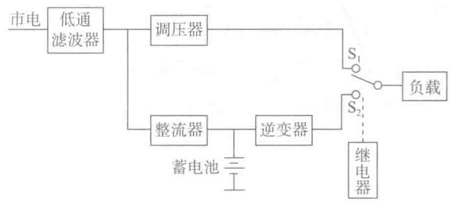

- 电压变换作用：使输入电压等于或不等于输出电压，如输入/输出电压为380V/380V、380V/220V或380V/480V等，当然也包括稳压的作用。
- 频率变换作用：使输入频率等于或不等于输出频率，如50Hz/50Hz、50Hz/60Hz（供用电不同频率变换），也包括一定范围内的稳频作用。稳频作用主要指在允许的频率范围内，UPS逆变器输出频率同步跟踪旁路频率，若旁路频率超限，则UPS逆变器以标准50Hz/60Hz自振频率输出。
- 提供一定的后备时间：UPS中的储能装置可以贮存一定的能量，在电网停电或间断时继续供电一段时间来保护负载供电不间断；后备时间一般为10min、30min或更长。
2. UPS的分类和拓扑结构
（1）按拓扑结构分类
由于敏感性负载数量的增多，UPS现在所指的装置包括从用于单个计算机的几kV·A到用于数据中心的几MV·A的UPS。同时，根据使用上的需要研发出了不同拓扑结构的UPS。
UPS按拓扑结构分类包括：后备式（passive standby）、在线互动式（line interactive）、双转换在线式（double conversion，AC-DC-AC）。
（2）三种标准的UPS类型与优缺点。
1）后备式
以后备方式运行的UPS如图3-1所示。

功能部件说明：
- 整流器：市电存在时，通过整流控制对蓄电池进行充电。
- 逆变器：市电存在时，逆变器不工作，处于等待状态；当市电断电后，逆变器带载输出。此类型逆变器输出电压波形一般为方波、准方波，少数高性能机型为正弦波。
- 输出转换开关：在市电正常时，接通市电由市电供电；市电断电后，接通逆变器由逆变器供电。此类开关多为高速继电器承担，高性能机型由静态开关承担。
- 滤波调压器：市电存在时，通过自动抽芯变压器调节市电电压以及通过无源滤波器吸收电网部分干扰。